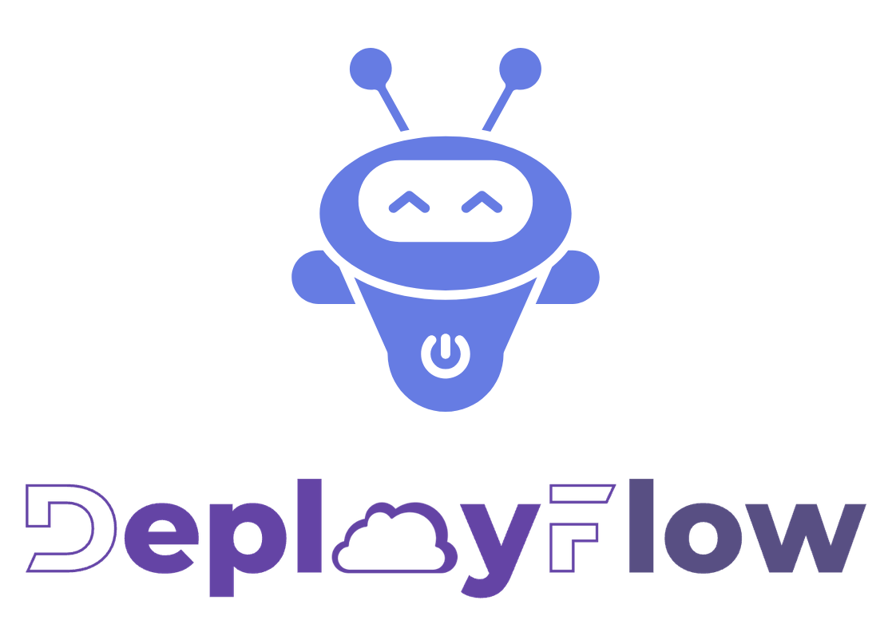

DeployFlow — reference¶
This is the reference for the current implementation: the appctl command, the
Proxmox LXC target, the manifest and the Ansible roles.
For what the workflow is and why you would point an agent at it, read the project README. Start with that one.
Deploy applications to Proxmox LXC containers with Ansible, then verify the service works — not just that the deployment command succeeded.
The tool is appctl. It builds a pinned artifact, installs it into a guest,
and then runs checks that reach the application the way a user does.
appctl targets # what can be delivered to, and what cannot yet
appctl list # what is configured
appctl build example-app # produce the artifacts the role installs
appctl install example-app # install it and check that it answers
appctl secrets check # are the required secrets set?
What it does¶
A stock Ubuntu template goes in, Ansible configures it, and the application runs under systemd with a sha256-pinned dependency tree. No container image is built, so there is no tarball to store and no image registry in the loop.
| Install | a pinned application into a Proxmox LXC guest, with Ansible |
| Reproducibility | the lockfile carries a hash for every dependency; the build refuses one that does not |
| Verification | application-level checks after the install, not only a green playbook |
| Secrets | in a gitignored .env, passed to Ansible in a mode-0600 file, never in argv |
| Build hosts | a build host is an application too — a toolchain, provisioned and asserted like any other |
Why the checks matter¶
Ansible reporting success proves that Ansible ran. It does not prove the application is usable. Each of these passed review and only failed in use:
| The check | What it catches |
|---|---|
| The package imports | A dependency tree that did not install |
| The unit is active | A service systemd accepted and then dropped |
| The port is listening | A process that bound somewhere other than the requested port |
| The endpoint answers | A service that listens and returns nothing |
Every application role carries its own checks, because only the application
knows what "working" means for it. The sample role in apps/example-app/
shows the pattern.
The three kinds of application¶
A manifest says where an application's code comes from. There are three kinds,
and they differ in more than the value of source.kind — they differ in what
has to happen before the application can be installed.
| Kind | Source | Has an artifact? | appctl build |
|---|---|---|---|
package |
a published version | yes — it already exists | exits non-zero: nothing to build |
repo |
a commit in a checkout | no — it has to be built | builds it |
toolchain |
nothing | no — it is the environment | exits non-zero: nothing to build |
A toolchain is an application whose purpose is to be the environment another application is built in. It installs no service, publishes no port, and has no artifact. Its role assembles what a build needs and asserts the machine can build:
builder:
description: the guest other applications are built on
target:
source:
kind: toolchain
secrets: []
Three things follow from it being a toolchain, and each is deliberate:
No dependency on common/python. That dependency is what asserts
app_port is defined, and a build host serves nothing. A role with no
dependency still runs — play 2 loops over each host's app_roles and
include_roles it — so no playbook changes.
The postconditions are about the machine, not the install. A role that installs a compiler and reports success has not said anything about whether a build can run on it. The builder asserts the architecture, the pinned runtime, the memory, the disk and the registry's reachability.
The minimums are measured, not guessed. A builder created with 12 GB of RAM passed every install check and then failed during a build, with an error naming a memory limit rather than the guest — and the guest stopped answering SSH entirely. The role now refuses a guest below the floor it needs.
The two shipped applications that need a build are the two hard shapes:
| Application | Shape | What it shows |
|---|---|---|
apps/omniroute/ |
repo — built from a checkout |
a source build that refuses a stale tree, and checks an inference plane's key gate |
apps/builder/ |
toolchain |
a guest that exists to build the other one |
Two more need no build at all: apps/example-app/ is
a small HTTP service that installs from a pinned wheel, and
apps/omniroute-release/ installs a published
npm release.
Targets¶
A target says where and how an application runs. The manifest names one:
proxmox_lxc is the only implemented target. Two more are planned:
| Target | What it would do | Status |
|---|---|---|
vm |
Provision a virtual machine and install the application into it | planned |
docker_vm |
Provision a virtual machine and run the application in Docker there | planned |
A manifest that names an unimplemented target fails before it builds, downloads or starts anything:
error: target kind 'vm' is planned but not implemented
provision a virtual machine and install the application into it.
implemented targets: proxmox_lxc
That failure is deliberate. An application that asks for a virtual machine must not be silently installed into a container instead.
Quickstart¶
You need a Proxmox VE host, a cached Linux template on it, and SSH access to the host.
git clone https://github.com/bruj0/deployflow.git
cd deployflow
uv tool install --editable .
cp app.example.yaml app.yaml # then edit it
# The inventory is gitignored — it names your own hosts — so a fresh clone
# has none. Create it from the committed templates.
mkdir -p inventory/group_vars
cp inventory.example/hosts.yml inventory/hosts.yml
cp -r inventory.example/group_vars/. inventory/group_vars/
Edit three things:
app.yaml— the application, its port and its target options.inventory/hosts.yml— your Proxmox host and the guest.inventory/group_vars/all/main.yml— your SSH public key.
inventory/ stays out of git on purpose: it names your Proxmox host, the guest
IDs and the addresses of machines only you can reach. Nothing in it is a
credential, and none of it is public either. The committed templates in
inventory.example/ show the shape of every key.
Then:
appctl secrets init # create .env from the required keys
appctl secrets set NAME 'value' # add each secret
appctl secrets check # confirm they are all set
appctl render # see the configuration before it lands
appctl install example-app
Run the install a second time. It should report changed=0: the same inputs
produce the same guest.
What an application role owes the framework¶
An application is one directory under apps/. Nothing in common/ or
playbooks/ changes when you add one.
# apps/myapp/meta/main.yml
dependencies:
- role: python # declares the dependency, so no playbook changes
app_name derives the service account, the directories, the virtual
environment and the unit name. app_port has no derivation and you must set it.
Layout¶
app.yaml the one configuration file: applications and targets
common/ framework. Names no application, anywhere.
lxc/ pct create from a stock template, DHCP, address discovery
python/ toolchain, service account, venv — the contract
apps/ one directory per application
example-app/ the sample used by the quickstart
omniroute/ OmniRoute, built from a source checkout
build/ the build script and its host-side half
docs/ what building it taught
omniroute-release/ OmniRoute, installed from a published npm release
builder/ a toolchain: the guest other applications are built on
src/appctl/ the appctl package
targets/ the delivery-target interface and its implementations
proxmox_lxc.py the only implemented target
docs/ architecture, configuration, rendering, secrets, build
playbooks/site.yml
inventory/ guests; the only file you edit to add one.
GITIGNORED — it names your own hosts. Create it
from inventory.example/.
inventory.example/ the committed templates for the above
roles_path = common:apps. A role's meta dependency declares what it needs,
so adding an application never edits a playbook.
Commands¶
| Command | What it does |
|---|---|
appctl list |
Every application, its target, its destination and its last install |
appctl targets |
The implemented targets, and the planned ones that are not built |
appctl init |
Write a starting app.yaml |
appctl build <app> |
Produce the artifacts the role installs |
appctl build --check |
Verify the committed artifacts and build nothing |
appctl render |
Render the application configuration, without deploying |
appctl install <app> |
Install it and run the checks |
appctl secrets init\|set\|list\|check |
Manage the .env |
Anything after a bare -- goes straight to ansible-playbook:
Documentation¶
| docs/architecture.md | How the parts fit together, and where the target boundary is |
| docs/configuration.md | Every key in app.yaml |
| docs/build-pipeline.md | How an artifact is produced and pinned |
| docs/rendering.md | How YAML becomes the configuration the guest reads |
| docs/secrets.md | How a secret reaches the guest |
| docs/targets.md | The target interface, and how to add a target |
| ../apps/omniroute/ | A working application built from a source checkout |
| ../apps/builder/ | A working build host — the toolchain application |
Status¶
Early. proxmox_lxc is implemented and tested against one Proxmox VE node.
The vm and docker_vm targets are interfaces only. See
docs/targets.md for what each would have to prove before it
could be called supported.
License¶
MIT. See LICENSE.